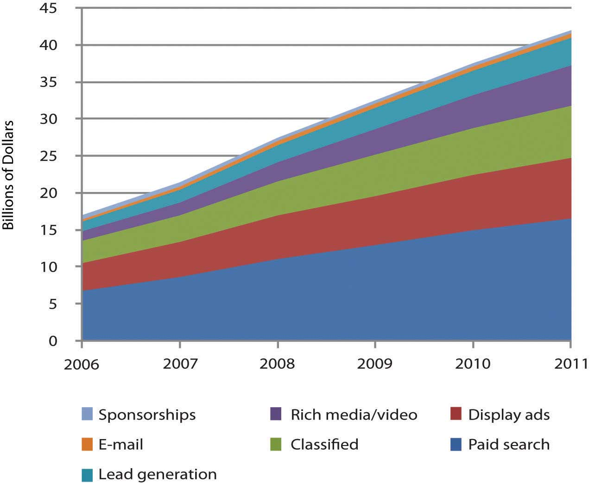
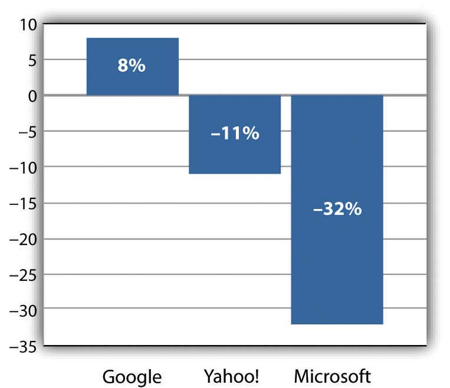

After studying this section you should be able to do the following:
Google has been called a one-trick pony,C. Li, “Why Google’s One-Trick Pony Struggles to Learn New Tricks,” Harvard Business Publishing, May 2009. but as tricks go, it’s got an exquisite one. Google’s “trick” is matchmaking—pairing Internet surfers with advertisers and taking a cut along the way. This cut is substantial—over twenty-one billion dollars in 2008. In fact, as Wired’s Steve Levy puts it, Google’s matchmaking capabilities may represent “the most successful business idea in history.”S. Levy, “The Secrets of Googlenomics,” Wired, June 2009. For perspective, consider that as a ten-year-old firm, and one that had been public for less than five years, Google had already grown to earn more annual advertising dollars than any U.S. media company. No television network, no magazine group, no newspaper chain brings in more ad bucks than Google. And none is more profitable. While Google’s stated mission is “to organize the world’s information and make it universally accessible and useful,” advertising drives profits and lets the firm offer most of its services for free.
Figure 8.1 U.S. Advertising Spending (by selected media)

Online advertising represents the only advertising category trending with positive growth. Figures for 2009 and beyond are estimates.
Source: Data retrieved via eMarketer.com.
Figure 8.2 U.S. Online Ad Spending (by format)
Search captures the most online ad dollars, and Google dominates search advertising. Figures for 2009 and beyond are estimates.
Source: Data retrieved via eMarketer.com.
As more people spend more time online, advertisers are shifting spending away from old channels to the Internet; and Google is swallowing the lion’s share of this funds transfer.J. Pontin, “But Who’s Counting?” Technology Review, March/April 2009. By some estimates Google has 76 percent of the search advertising business.C. Sherman, “Report: Google Leads U.S. Search Advertising Market With 76% Market Share,” Search Engine Land, January 20, 2009. Add to that Google’s lucrative AdSense network that serves ads to sites ranging from small time bloggers to the New York Times, plus markets served by Google’s acquisition of display ad leader DoubleClick, and the firm controls in the neighborhood of 70 percent of all online advertising dollars.L. Baker, “Google Now Controls 69% of Online Advertising Market,” Search Engine Journal, March 31, 2008. Google has the world’s strongest brandL. Rao, “Guess Which Brand Is Now Worth $100 Billion?” TechCrunch, April 30, 2009. (its name is a verb—just Google it). It is regularly voted among the best firms to work for in America (twice topping Fortune’s list). While rivals continue to innovate (see the box “Search: Google Rules, but It Ain’t Over” in Section 8.10 "The Battle Unfolds") through Q1 2009, Google’s share of the search market has consistently grown while its next two biggest competitors have shrunk.
Figure 8.3 Search Market Share, Year-End 2008Adapted from S. Shankland, “Google Conquers 2008 Search Market in U.S.,” CNET, January 14, 2009.

Figure 8.4 Change in Market Share, 2007–2008Adapted from S. Shankland, “Google Conquers 2008 Search Market in U.S.,” CNET, January 14, 2009.
Wall Street has rewarded this success. The firm’s market capitalization (market cap)The value of a firm calculated by multiplying its share price by the number of shares., the value of the firm calculated by multiplying its share price by the number of shares, makes Google the most valuable media company on the planet. By early 2009, Google’s market cap was greater than that of News Corp (which includes Fox, MySpace, and the Wall Street Journal), Disney (including ABC, ESPN, theme parks, and Pixar), Time Warner (Fortune, Time, Sports Illustrated, CNN, and Warner Bros.), Viacom (MTV, VH1, and Nickelodeon), CBS, and the New York Times—combined! Not bad for a business started by two twenty-something computer science graduate students. By 2007 that duo, Sergey Brin and Larry Page, were billionaires, tying for fifth on the Forbes 400 list of wealthiest Americans.
Brin and Page have built a talent magnet. At the Googleplex, the firm’s Mountain View, California headquarters, geeks are lavished with perks that include on-site laundry, massage, carwash, bicycle repair, free haircuts, state of the art gyms, and wi-fiWireless technologies linking base stations (or hotspots) with devices containing wi-fi chips. Most hotspots have a range of 100 to 300 feet. equipped shuttles that ferry employees between Silicon Valley and the San Francisco Bay area. The Googleplex is also pretty green. The facility gets 30 percent of its energy from solar cells, representing the largest corporate installation of its kind.D. Weldon, “Google’s Power Play,” EnergyDigital, August 30, 2007.
The firm’s quirky tech-centric culture is evident everywhere. A T-Rex skeleton looms near the volleyball court. Hanging from the lobby ceiling is a replica of SpaceShipOne, the first commercial space vehicle. And visitors to the bathroom will find “testing on the toilet,” coding problems or other brainteasers to keep gray matter humming while seated on one of the firm’s $800 remote-controlled Japanese commodes. Staff also enjoy an A-list lecture series attracting luminaries ranging from celebrities to heads of state.
And of course there’s the food—all of it free. The firm’s founders felt that no employee should be more than 100 feet away from nourishment, and a tour around Google offices will find espresso bars, snack nooks, and fully stocked beverage refrigerators galore. There are eleven gourmet cafeterias on site, the most famous being “Charlie’s Place,” first run by the former executive chef for the Grateful Dead.
CEO Eric Schmidt says the goal of all this is “to strip away everything that gets in our employees’ way.”L. Wolgemuth, “Forget the Recession, I Want a Better Chair,” U.S. News and World Report, April 28, 2008. And the perks, culture, and sense of mission have allowed the firm to assemble one of the most impressive rosters of technical talent anywhere. The Googleplex is like a well-fed Manhattan project, and employee ranks have included “Father of the Internet” Vint Cerf; Hal Varian, the former Dean of the U.C. Berkeley School of Information Management and Systems; Kai-Fu Lee, the former head of Microsoft Research in China; and Andy Hertzfeld, one of the developers of the original Macintosh user interface.
Engineers find Google a particularly attractive place to work, in part due to a corporate policy of offering “20 percent time,” the ability work the equivalent of one day a week on new projects that interest them. It’s a policy that has fueled innovation. Google Vice President Marissa Mayer (who herself regularly ranks among Fortune’s most powerful women in business) has stated that roughly half of Google products got their start in 20 percent time.B. Casnocha, “Success on the Side,” The American: The Journal of the American Enterprise Institute, April 24, 2009.
Studying Google gives us an idea of how quickly technology-fueled market disruptions can happen, and how deeply these disruptions penetrate various industries. We’ll also study the underlying technologies that power search, online advertising, and customer profiling. We’ll explore issues of strategy, privacy, fraud, and discuss other opportunities and challenges the firm faces going forward.